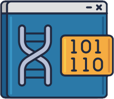

| Nazwa produktu | Zdjęcie produktu | Opis | Cena | Czas trwania |
|---|---|---|---|---|
| Analiza mikromacierzy DNA |  | Techniki analizy mikromacierzy są wykorzystywane do interpretacji danych generowanych z eksperymentów na DNA (analiza chipów genowych), co pozwala badać stan ekspresji dużej liczby genów w jednym eksperymencie. | 10000 zł | 2 dni |
| Rekonstrukcja drzew filogenetycznych | |
Rekonstrukcja filogenezy przydaje się do wyjaśniania ewolucji danej grupy organizmów, pokazania kolejnych etapów jej różnicowania się lub uzyskiwania określonych adaptacji. | 2000 zł | 20 h |
| Budowa sieci interacji białek | Interakcje białko-białko (PPI) są niezbędne w prawie każdym procesie w komórce, więc zrozumienie PPI ma kluczowe znaczenie dla zrozumienia fizjologii komórki w stanach normalnych i chorobowych. | 3000 zł | 1 dzień |